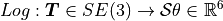
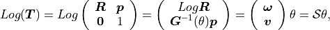
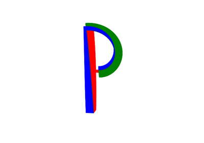
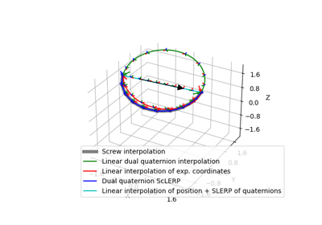
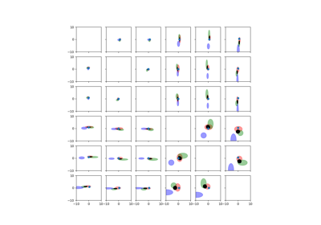

pytransform3d.transformations.exponential_coordinates_from_transform¶
- pytransform3d.transformations.exponential_coordinates_from_transform(A2B, strict_check=True, check=True)[source]¶
Compute exponential coordinates from transformation matrix.
Logarithmic map.


where
![\boldsymbol{G}^{-1}(\theta)
= \boldsymbol{I} \frac{1}{\theta}
+ \frac{1}{2} [\boldsymbol{\omega}]
+ (\frac{1}{\theta} - \frac{1}{2 \tan \frac{\theta}{2}})
[\boldsymbol{\omega}]^2.](../_images/math/6556bf041407334dc6923db404e4fc8552918dc3.png)
- Parameters:
- A2Barray-like, shape (4, 4)
Transformation matrix from frame A to frame B
- strict_checkbool, optional (default: True)
Raise a ValueError if the transformation matrix is not numerically close enough to a real transformation matrix. Otherwise we print a warning.
- checkbool, optional (default: True)
Check if transformation matrix is valid
- Returns:
- Sthetaarray, shape (6,)
Exponential coordinates of transformation: S * theta = (omega_1, omega_2, omega_3, v_1, v_2, v_3) * theta, where S is the screw axis, the first 3 components are related to rotation and the last 3 components are related to translation. Theta is the rotation angle and h * theta the translation.
Examples using pytransform3d.transformations.exponential_coordinates_from_transform¶

Plot Straight Line Paths



Dual Quaternion Interpolation

Fuse 3 Poses